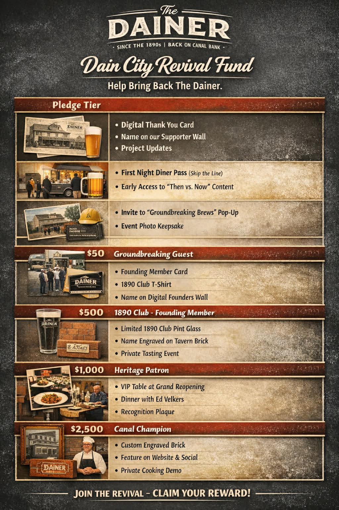

About Us
Built by the canal, kept alive by the community.
The Dainer began in the 1890s on Canal Bank Street in Dain City, serving workers from the canal, mills, railway, and local industry.

The Original Dainer
Operated from the 1890s through 2016. Demolished in 2021. It housed horses in the basement, separated labourers and supervisors by room, and became part of the everyday fabric of the city.
It was never fancy. It was essential.
The Comeback
The Dainer - Canal Bank Revival is not a rebrand. It is a continuation. We are honouring the past while building a sustainable future for the same community that kept the original alive.
What Makes The Dainer Different
- Classic diner comfort food
- Big portions, fair prices
- Sweet and savoury favourites
- Inspired by the original Dainer menu style
- Built on local history, not trends
- Rooted in Dain City